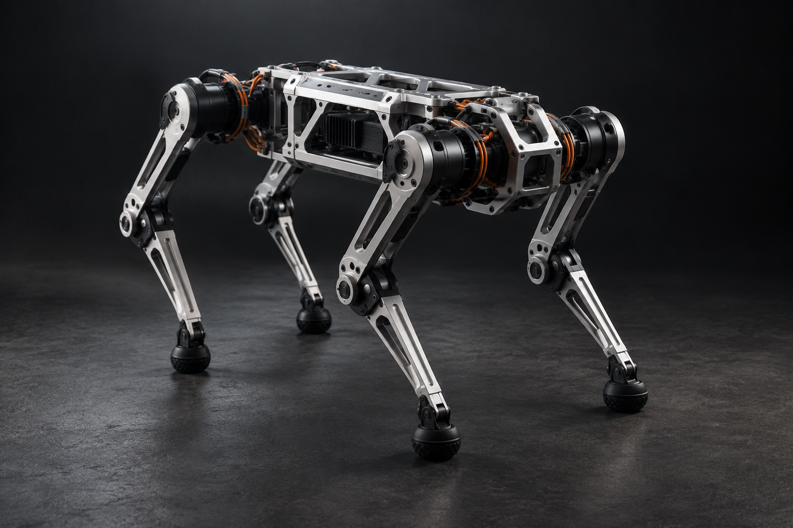
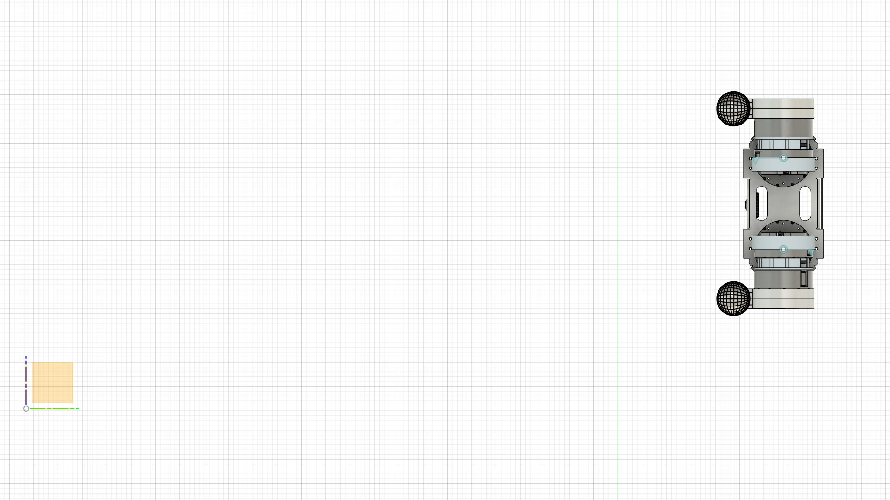

Designed for movement.
An articulated quadruped architecture with aluminum components and a defined kinematic model, connecting physical design to control.
Intelligent movement starts with thoughtful engineering. We’re building a quadruped platform that connects mechanical design with learned control.
Meet the platform
A research platform for exploring how robots move, balance, and interact with the physical world. Developed from the joint up.

From the actual CHINBI robot description
Development specifications from the V1 robot model. Hardware performance is still being validated.
Hardware and software evolve together. Our development workflow brings design, simulation, and control into the same loop.
An articulated quadruped architecture with aluminum components and a defined kinematic model, connecting physical design to control.
Reinforcement learning workflows explore locomotion policies in simulation before progressing toward hardware validation.
Robot descriptions and simulation environments let us examine joint behavior, improve control, and iterate on the platform.
We believe legged robots can extend what machines can do beyond structured environments.
Chinbi Robotics is at the beginning of that journey. Our focus today is the foundation: a capable mechanical platform, reliable control, and a disciplined path from simulation to the physical world.
Follow the engineering journeyWe’re developing the platform step by step. These are our current engineering foundations and the work ahead.
Mechanical assembly, joint architecture, and robot description.
Simulation workflows and reinforcement learning for locomotion.
Iterative hardware testing and validation of learned behavior.